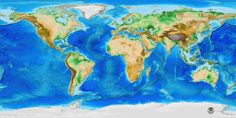

EMSC Week 11 - A detailed look at the depth-age relationship for the seafloor.¶
We are going to work with the ETOPO1 dataset (Amante et al) which we can download from various services online when we need it. You can read more about the dataset here: https://ngdc.noaa.gov/mgg/global/

We need some libraries to help with downloading, manipulating and plotting the data:
numpyto manipulate arraysxarraywhich extendsnumpyfor data that might be too big to read all at oncematplotlibandcartopyfor plotting data on maps
Navigation¶
References¶
Amante, C. “ETOPO1 1 Arc-Minute Global Relief Model: Procedures, Data Sources and Analysis.” National Geophysical Data Center, NOAA, 2009. https://doi.org/10.7289/V5C8276M.
Read ETOPO data from a remote service¶
This is how we access the data - provide a url, open that url, and ask for a subset of the data (either by region or by taking every n’th value)
etopo_dataset = "http://thredds.socib.es/thredds/dodsC/ancillary_data/bathymetry/ETOPO1_Bed_g_gmt4.nc"
etopo_data = xarray.open_dataset(etopo_dataset)
subs_data = etopo_data.sel(x=slice(left,right, 30), y=slice(bottom, top, 30))
Here we have requested every 30th data point.
(left, bottom, right, top) = (-180, -90, 180, 90)
map_extent = ( left, right, bottom, top)
etopo_dataset = "http://thredds.socib.es/thredds/dodsC/ancillary_data/bathymetry/ETOPO1_Bed_g_gmt4.nc"
etopo_data = xarray.open_dataset(etopo_dataset)
subs_data = etopo_data.sel(x=slice(left,right, 300), y=slice(bottom, top, 300))
lons = subs_data.coords.get('x')
lats = subs_data.coords.get('y')
vals = subs_data['z']
x,y = np.meshgrid(lons.data, lats.data)
height = vals.data
Validation¶
Can you check to see what resolution data we have downloaded ?
(hint the height data is a numpy array and has a shape attribute)
Check here:
print("The shape of the array is ... ")
The shape of the array is ...
and we should plot the data to see if it matches the image above and whether we need more resolution. Does that look right ?
If the map is horribly pixelated, we might try downloading more data. Don’t go mad or it will take forever.
import cartopy.crs as ccrs
import cartopy.feature as cfeature
coastline = cfeature.NaturalEarthFeature('physical', 'coastline', '10m',
edgecolor=(1.0,0.8,0.0),
facecolor="none")
plt.figure(figsize=(15, 10))
ax = plt.subplot(111, projection=ccrs.PlateCarree())
ax.set_extent(map_extent)
ax.add_feature(coastline, edgecolor="black", linewidth=0.5, zorder=3)
plt.imshow(height, extent=map_extent, transform=ccrs.PlateCarree(),
cmap='terrain', origin='upper', vmin=-5000., vmax=5000.)
<matplotlib.image.AxesImage at 0x11e006e50>